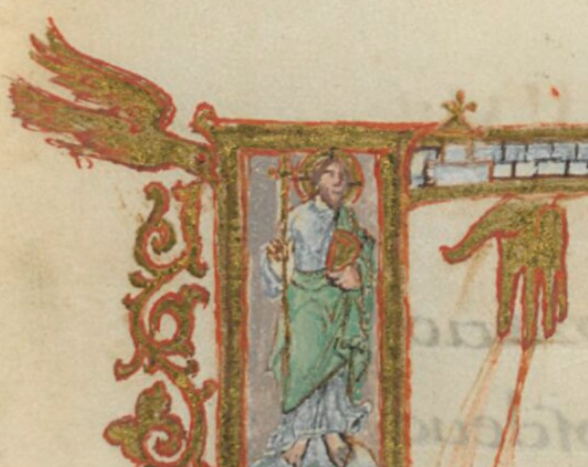

Noutro fólio do Sacramentário de Drogo (27r) podemos ver uma representação do martírio de Santo Estevão numa capitular (letra "D"), apedrejado em Jerusalém.
O que de outro modo salta à vista é a representação da Trindade, em cima, onde à esquerda se vê a pomba, ao centro o cordeiro, e à direita a mão do Pai.
Esta mão do Pai não tem os três dedos em gesto de benção, mas emite três feixes de luz, que iluminam o santo, numa elevatio animae de transição entre o mundo material - o martírio; e o mundo espiritual - a Jerusalém Celeste. Onde 12 templos se erguem amuralhados, fechando a inicial historiada e prenunciando um novo princípio - o ALFA, ao centro da representação.